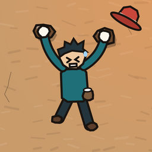

Thumb Climb
A climbing game where your two thumbs move the climber's two hands (iPhone)
Contact
For bug reports or questions, please email us. Including your iPhone model, iOS version and the stage where it happened helps us a lot.
How to play
The left half of the screen moves the left hand, the right half the right hand. Press and slide to reach, and release to grab the hold under the hand. Press on the side of a gripping hand to let go. If both hands let go, you fall. A quick tap does not grab (you need to press a moment before releasing).
FAQ
- I ran out of stamina
- Starting or restarting a stage uses 10 stamina. Falling during a climb costs nothing. Stamina recovers 10 every 5 minutes, even while the app is closed. Watching an ad restores 50 (up to 5 times a day).
- What is the rescue rope?
- After a big fall, it pulls you up to the last ledge. You get one in stage 2 and one more every day (you can hold up to 5). Runs that used a rope still clear the stage, but do not count for the "No falls" star or the leaderboards.
- I can't select 100m Time Attack or Daily
- 100m Time Attack opens after clearing stage 10, and Daily after stage 25. Both are on the Home screen.
- My scores don't appear on the leaderboards
- Leaderboards use Game Center. Check that you are signed in under iOS Settings > Game Center. Runs that used a rope are not submitted.
- I bought Premium, but ads came back after changing phones or reinstalling
- Tap "Restore purchase" in Home > Settings. If you bought it with the same Apple ID, Premium comes back at no extra charge.
- My progress is gone
- Progress and outfits are saved on the device. They are deleted with the app and cannot be moved to another device. Premium can be restored with "Restore purchase".
- The game is in the wrong language
- The game follows your iPhone's language. You can change it for this app only in iOS Settings > Thumb Climb > Language.
- How do I turn off the sound?
- Tap "Sound ON" in Home > Settings. While climbing, you can also switch it from the menu (≡) at the top right.